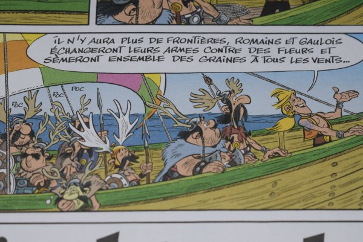

![[ANA JDG] Asterix and the Great Rescue - Megadrive](vi/6oUXi0ckLmA/default.jpg)
![[ Présentation pour la chaîne Grenier des Joueurs ] JDG Prod](art/SHAR.6419.583.2.jpg)


La semaine dernière, en faisant les courses, un de mes proches m'a ramené la bande-dessiné "La fille de Vercingétorix" !
Aussitôt vu, aussitôt partit "là où vous ne pouvez pas être à ma place" pour dévorer cette album... c'était intéressant !
Dans un premier temps, je me rends compte qu'on arbore "R. Goscinny" et "A. Uderzo" en gros sur l'album de part et d'autre du titre "Astérix" mais les vrais auteurs de cette album , à savoir "Jean-Yves Ferri" et "Didier Conrad", sont en tout petit sous le titre de l'épisode avec pour seul mise en évidence du gras ! C'est hilarant, on dirait qu'ils ont honte ou que le marketing est plus puissant que la vérité !
Pour ceux qui ne connaissent pas Ferri et Conrad, ce sont les nouveaux auteurs d'Astérix depuis 2013 avec "Astérix chez les Pictes". Conrad est le dessinateur ( très bon boulot d'ailleurs, je retrouve bien la pâte de Goscinny) et Ferri est le scénariste ( tant qu'Astérix parle de sujet de société avec transpositions, il fait son travail ! ) !
Il faut savoir que Conrad est un des auteurs de Kid Lucky ,il a fait deux tomes dans les années 90 donc pendant Le Petit Spirou et bien avant Gastoon, donc il a vraiment beaucoup de talent en terme de dessins vu qu'il sait changé de pâte graphique avec un gros contraste !
Un autre truc marrant est que sur l'album figure la fille de Vercingétorix avec son air "Je m'en fout, je suis dédaigneuse, je boude et je vous emmerde !"
( je l'aime déjà, je me reconnais tellement dans ce personnage ! C'est un exemple pour la jeunesse tellement elle représente bien , les traits grossis, une jeune adolescente du XXI ème siècle ! ), ce qui est quand même ballot vu que sa première apparition DANS l'album sera avec un petit coté mystérieux ( jeux d'ombres et de cadrage )... c'est comme si le générique de Star Wars 5 avait le passage "Je suis ton père" !
Bon... je dois vous avouez que je ne suis pas très fan des albums d'Astérix où ils ne voyagent pas et où les clichés ne sont autant légions... je suis du même avis qu'Obélix à 1/4 de l'histoire (oui,il prétend qu'il préfère plus voyager que de rester au village... merci Ferri ! )
mais l'album est intéressant car il parle de cette jeunesse qui veut s'émanciper et partir loin de leurs parents et... fin, bref, cet album est juste "Astérix et les Normands" ("Astérix chez les Vikings" pour l'animation) mais avec une fille forte et plus moderne que Goudurix !
Bien sur, on peut voir une réponse à une montée de la pensée "Féministe" dans le marketing et nah nah nah... QUE NENNI !
Cet album est juste une modernisation de l'album où apparaît Goudurix ( qui était une caricature d'un jeune parisien des années 60-70 ! Ici, nous avons une caricature d'une jeune adolescente ayant deux papas adoptifs et qui vit dans l'ombre de son père pour que le groupe reste unis derrière le symbole de son père: Le Torque (qui a été parodié par un casque mp3 en or... on dirait bien et ,si c'est le cas, c'est brillant !).
Oui, le personnage (qui se nomme "Adréaline" au passage) est une caricature éloignée des autres personnages féminins de la série... et alors ? On s'en moque complètement du "féminisme" ! À la fin de l'histoire, elle trouve un homme, se marie avec et s'émancipe enfin ! C'est grâce à ton union avec un homme et son gros bateau que t'as l'avenir que tu désires !

À aucun moment dans un dialogue de la BD nous sommes en présence d'un texte contre le patriarcat, juste contre une vie de guerre/virile comme veulent les Arvernes ( une des tribus qui a participé à la bataille contre les romains au près de Vercingétorix ! ).
J'ai vu (pas lu) des conneries de journalistes/bloggeurs/... qui ont voulu rattaché ce fantasme idéologique ("néo-féminisme" que les membres de la "fachosphère" appellent ça) à la BD:
https://www.franceculture.fr/emissions/la-theorie/la-transition-culturelle-du-vendredi-25-octobre-2019
https://www.20minutes.fr/arts-stars/culture/2493727-20190410-asterix-38e-album-fille-vercingetorix-surfera-hype-feministe
https://www.valeursactuelles.com/clubvaleurs/culture/asterix-progressiste-lirreductible-gaulois-succombe-la-bien-pensance-gauchiste-112208
Aussi, on a dit qu'Adréaline ressemble à Greta Thunberg ( Militante Mineure Écolo' Suédoise ):
https://www.nouvelobs.com/bd/20191023.OBS20222/le-nouvel-asterix-nous-parle-de-greta-thunberg-et-c-est-rejouissant.html
https://www.sudinfo.be/id148154/article/2019-10-24/le-nouvel-album-asterix-la-fille-de-vercingetorix-nous-presente-adrenaline-qui
https://theworldnews.net/fr-news/asterix-un-lien-entre-la-fille-de-vercingetorix-et-greta-thunberg
http://bdzoom.com/147381/lart-de/ferri-et-conrad-ont-trouve-une-nouvelle-cheffe-de-fille-pour-les-60-ans-dasterix/
Non... à part la queue de cheval, elle n'a rien qui ressemble à la fille qui sèche l'école pour le climat.
Adréaline aurait d'ailleurs été inspirée de la fille du dessinateur
( Merci Le Journal Du Dimanche :
https://www.lejdd.fr/Culture/Livres/asterix-lheroine-a-des-points-communs-avec-greta-thunberg-mais-cest-un-hasard-3927092
mais surtout Wikipédia:
https://fr.wikipedia.org/wiki/La_Fille_de_Vercing%C3%A9torix#Caricatures_et_allusions_%C3%A0_des_personnages_c%C3%A9l%C3%A8bres )
De toutes façons, elle ne défend ni le climat, ni le féminisme, ni les LGBTIQ+ (même si elle a deux papas, ils ne sont pas nécessairement gays car ils ont reçus Adréaline VIA Vergincétorix... c'est plus l'acceptation de l'ultime mission du gars respecté de tous qu'une adoption d'un couple gay ! ) et on n'est pas non plus avec un message comme quoi " les romains, ces honteux militants de droite, sont méchants !" puisqu'on voit que du coté des romains aussi on a les même problème qu'en Gaule avec les ados !

L'album parle juste de l'adolescence et son désir d'émancipation pour un monde nouveau... ce qui est marrant, c'est que le gars qui fera de l'effet à Adréaline est Letitbix,un jeune capitaine de navire gaulois rêvant d'aventure et d'espace verdoyant... personnellement, je vois un hippie !

Pour conclure je défend que cet album est juste un album de mise à jour comparé à " Astérix et les Normands " de la vision de l'adolescence dans la prolongation de la modernisation de l'univers d'Astérix entrepris par Ferri et Conrad en 2015 avec "Le Papyrus de César" où on parlait déjà des nouvelles technologies de l'internet ainsi que le journalisme par transpositions avec l'univers gaulois !
Les gens se plaignent d'un scénario qui ne dénonce rien (notamment Mathilde Serrell,chroniqueuse et journaliste à France Culture... on la paye pour avoir un avis ! ) et qui ne prend aucun risque (notamment Quentin Girard, journaliste à Libération... ), ils n'ont juste pas pris le temps de se renseigner, de lire et de déduire les intentions des auteurs !
Voila... je termine avec le mot qui a encore perdu en crédibilité VIA un de mes articles: Journalisme.
KidpaddleetcieGlin
ISBN de mon exemplaire: 978-2-86497-342-3
Partage